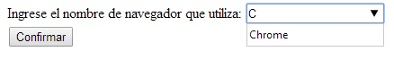

Cuando utilizamos un editor de línea:
<input type="text">
Podemos ingresar cualquier cadena en su interior. Con html5 podemos mostrarle una lista de sugerencias (no obligatorias como un select) para que el operador pueda seleccionarla sin tener que tipear todos los caracteres.
Esta funcionalidad se logra creando un elemento nuevo llamado datalist con todas sus opciones y luego asociándolo a un control input de tipo text.
Una cosa importante es notar que cuando disponemos un datalist no es obligatorio que el usuario seleccione uno de esos elementos, el usuario tiene la libertad de ingresar otra cadena de caracteres distinta a la propuesta por el datalist.
Para ver la sintaxis y funcionamiento lo haremos confeccionando un problema.
Desarrollar un formulario que solicite la carga del nombre de navegador que utiliza el visitante. Disponer un control de tipo text para el ingreso de dicho dato y mostrar mediante un datalist los navegadores más comunes.
<!DOCTYPE HTML>
<html>
<head>
<title>Prueba</title>
</head>
<body>
<form action="#">
Ingrese el nombre de navegador que utiliza:
<input type="text" id="navegador" list="listanavegadores">
<datalist id="listanavegadores">
<option label="Chrome" value="Chrome">
<option label="Firefox" value="Firefox">
<option label="Internet Explorer" value="Internet Explorer">
<option label="Safari" value="Safari">
</datalist>
<br>
<input type="submit" value="Confirmar">
</form>
</body>
</html>
Por un lado definimos el datalist con todas sus opciones:
<datalist id="listanavegadores">
<option label="Chrome" value="Chrome">
<option label="Firefox" value="Firefox">
<option label="Internet Explorer" value="Internet Explorer">
<option label="Safari" value="Safari">
</datalist>
Dentro del elemento datalist definimos los elementos option inicializando la propiedad label con el texto que se mostrará y la propiedad value con el valor que retornará si se lo selecciona.
Para asociar el datalist con un control input debemos inicializar la propiedad list del control input con el id del datalist:
<input type="text" id="navegador" list="listanavegadores">
Luego cuando comenzamos a escribir el contenido aparece una lista desplegando las sugerencias:
